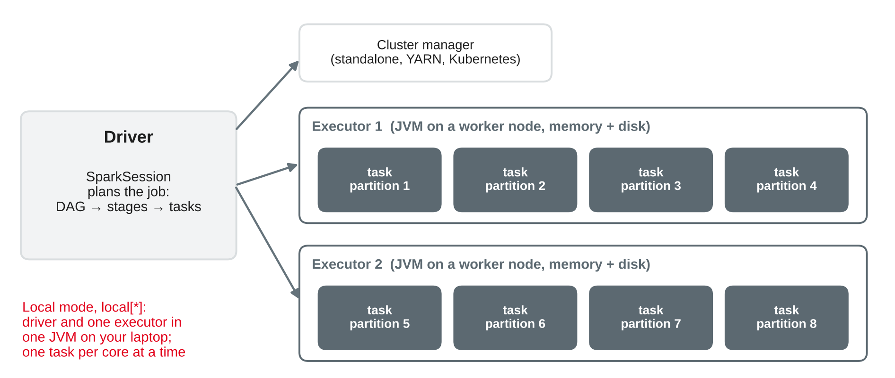
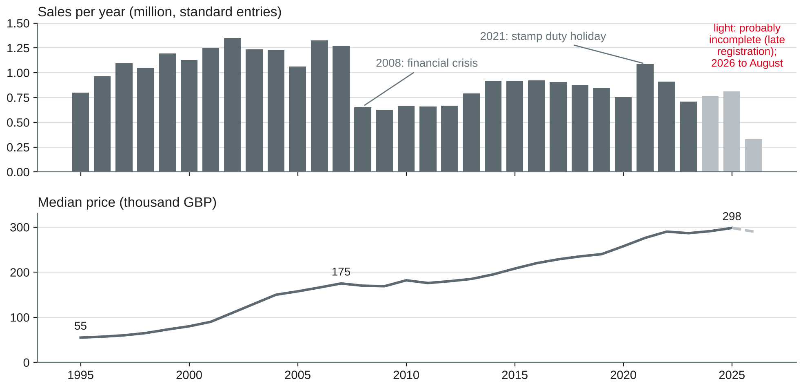
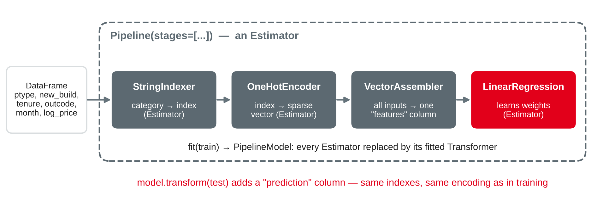

Data Analytics
Spark recap · Spark SQL and DataFrames on 31 million property sales · an ML pipeline with MLlib · DuckDB or Spark?
DHBW Mannheim · Data Science and Artificial Intelligence · Semester 5
Today's question: when does an analysis need a big data framework such as Spark — and what does it change in how we query and model?
What you know from Cloud Computing and Big Data — in three slides

Own illustration based on Zaharia et al. (2016) and Apache Software Foundation (n.d.-a); further reading: Tandon et al. (2022, Chapter 2) and Parsian (2022, Chapters 1–2).
| Concept | Meaning | Example |
|---|---|---|
| Transformation | Defines a new DataFrame; computes nothing yet | filter, select, withColumn, groupBy().agg(), join |
| Action | Triggers a job and returns or writes a result | count, show, collect, toPandas, write |
| Narrow | Each output partition needs one input partition | filter, withColumn |
| Wide (shuffle) | Rows move between partitions over the network | groupBy, join, orderBy, window PARTITION BY |
Based on Apache Software Foundation (n.d.-b), Armbrust et al. (2015) and Zaharia et al. (2016).
from pyspark.sql import SparkSession, functions as F
spark = (SparkSession.builder
.master("local[*]") # all cores, one machine
.appName("ppd")
.config("spark.driver.memory", "4g") # half the RAM at most
.config("spark.sql.shuffle.partitions", "8") # default 200
.getOrCreate())
print(spark.version) # 4.2.0 in our testsBased on Apache Software Foundation (n.d.-c, n.d.-d).
s = spark.read.parquet("data/ppd") # (1)
flats = s.filter(F.col("ptype") == "F") # (2)
by_town = flats.groupBy("town").agg(F.median("price")) # (3)
top = by_town.orderBy(F.desc("median(price)")) # (4)
top.show(5) # (5)
print(flats.count()) # (6)31 million property sales
HM Land Registry (n.d.-a, n.d.-b); The National Archives (n.d.).
SCHEMA = ("tid STRING, price INT, date TIMESTAMP, postcode STRING, ptype STRING, "
"new_build STRING, tenure STRING, paon STRING, saon STRING, street STRING, "
"locality STRING, town STRING, district STRING, county STRING, "
"category STRING, status STRING")
raw = spark.read.csv("data/pp-*.csv", schema=SCHEMA) # no header in the files
ppd = (raw.drop("paon", "saon", "street", "locality", "status")
.withColumn("year", F.year("date")))
ppd.write.mode("overwrite").partitionBy("year").parquet("data/ppd")
p = spark.read.parquet("data/ppd"); p.createOrReplaceTempView("ppd")Own example based on Apache Software Foundation (n.d.-e) and Armbrust et al. (2015); data from HM Land Registry (n.d.-a).
DataFrame API
(p.filter(F.col("category") == "A")
.groupBy("year")
.agg(F.count("*").alias("sales"),
F.median("price").alias("median_price"))
.orderBy("year")
.show())Spark SQL
SELECT year, count(*) AS sales,
median(price) AS median_price
FROM ppd
WHERE category = 'A'
GROUP BY year
ORDER BY yearBased on Armbrust et al. (2015) and Apache Software Foundation (n.d.-e).

Own analysis with Spark (Zaharia et al., 2016); data from HM Land Registry (n.d.-a).
explain()+- Window [rank(...) ...]
+- Exchange SinglePartition <- shuffle: global ranking
+- HashAggregate(keys=[district], ...)
+- Exchange hashpartitioning(district, 8) <- shuffle
+- ObjectHashAggregate(keys=[district, year], functions=[percentile(price, 0.5)])
+- Exchange hashpartitioning(district, year, 8)
+- FileScan parquet [price, district, category, year]
PartitionFilters: [year IN (2015, 2025)]
PushedFilters: [IsNotNull(category), EqualTo(category, A)]Own example with Spark (Armbrust et al., 2015); plan shortened.
| District (≥ 500 sales in both years) | Median 2015 | Median 2025 | Growth | Rank of 304 |
|---|---|---|---|---|
| Salford | 129,995 | 240,000 | +84.6 % | 1 |
| Blaenau Gwent | 78,000 | 140,250 | +79.8 % | 2 |
| Oldham | 119,725 | 215,000 | +79.6 % | 3 |
| Kensington and Chelsea | 1,175,000 | 1,200,000 | +2.1 % | 302 |
| City of Westminster | 890,000 | 897,000 | +0.8 % | 303 |
| Hammersmith and Fulham | 730,000 | 709,600 | −2.8 % | 304 |
Own analysis with Spark SQL (Armbrust et al., 2015); data from HM Land Registry (n.d.-a).
An analyst reports: "Flats are crashing: the median flat sold for £213,000 in 2026, 9 % below 2025 (£235,000) — and only 0.7 % of the flats sold were new builds, so developers have stopped building." Her code:
(p.filter(F.col("year") >= 2025)
.groupBy("year", "ptype")
.agg(F.percentile_approx("price", 0.5).alias("median"),
F.avg((F.col("new_build") == "Y").cast("int")).alias("share_new")))A first price estimate for 763,740 sales
Own framing based on Provost and Fawcett (2013) and Chapman et al. (2000); data from HM Land Registry (n.d.-a).

| scikit-learn (session 8) | Spark MLlib |
|---|---|
Pipeline, fit, predict | Pipeline, fit, transform (adds a prediction column) |
ColumnTransformer + OneHotEncoder | StringIndexer + OneHotEncoder + VectorAssembler |
Own illustration based on Apache Software Foundation (n.d.-f) and Meng et al. (2016).
from pyspark.ml import Pipeline
from pyspark.ml.feature import StringIndexer, OneHotEncoder, VectorAssembler
from pyspark.ml.regression import LinearRegression
data = (p.filter("category = 'A' AND postcode IS NOT NULL AND year IN (2023, 2024)")
.withColumn("outcode", F.split("postcode", " ")[0])
.withColumn("month", F.month("date"))
.withColumn("log_price", F.log("price")))
train, test = data.filter("year = 2023"), data.filter("year = 2024")
cats = ["ptype", "new_build", "tenure", "outcode"]
pipe = Pipeline(stages=[
StringIndexer(inputCols=cats, outputCols=[c + "_i" for c in cats], handleInvalid="keep"),
OneHotEncoder(inputCols=[c + "_i" for c in cats], outputCols=[c + "_v" for c in cats]),
VectorAssembler(inputCols=[c + "_v" for c in cats] + ["month"], outputCol="features"),
LinearRegression(featuresCol="features", labelCol="log_price")])
model = pipe.fit(train)
pred = model.transform(test) # adds the column "prediction"Own example based on Apache Software Foundation (n.d.-f); data from HM Land Registry (n.d.-a).
| Test 2024 (763,740 sales) | MdAPE | Within ±10 % | Within ±20 % | Fit time |
|---|---|---|---|---|
| Median of all 2023 sales | 37.7 % | 13.3 % | 27.5 % | — |
| Median by property type | 34.8 % | 15.3 % | 30.0 % | — |
| Baseline: median by postcode district × type | 18.3 % | 29.6 % | 53.7 % | 0.3 s (DuckDB) |
| MLlib linear regression, one-hot | 19.1 % | 28.1 % | 51.8 % | 21 s |
| MLlib gradient-boosted trees + baseline as feature | 18.4 % | 29.4 % | 53.4 % | 61 s |
Own analysis with Spark MLlib (Meng et al., 2016) and DuckDB (Raasveldt & Mühleisen, 2019); data from HM Land Registry (n.d.-a).
When a big data framework is needed
| 31.6 million rows, 4 cores, 15 GB RAM | Spark 4.2 (local) | DuckDB 1.5 |
|---|---|---|
| Count rows in the 5.5 GB CSV | 6.4 s | 6.3 s |
| CSV → Parquet | 70 s | 22 s |
| Q1: sales and exact median per year | 3.0–7.9 s | 0.4–0.5 s |
| Q2: district growth with window ranking | 1.9–4.4 s | 0.05–0.07 s |
| Q3: filter and count (London sales over £5 million) | 0.9–1.5 s | 0.1–0.2 s |
| Linear regression on 708,233 rows | 21 s (MLlib) | 3.9 s (scikit-learn) |
Own measurements with Spark (Zaharia et al., 2016) and DuckDB (Raasveldt & Mühleisen, 2019); data from HM Land Registry (n.d.-a).
| Requirement | One machine (DuckDB, pandas) | Spark (or similar) |
|---|---|---|
| Data volume | Fits on one disk; queries finish in acceptable time | Larger than one machine, or too slow on the biggest one |
| Where the data lives | Files on a laptop or one server | Already in a data lake or lakehouse on a cluster |
| Workload | Interactive analysis, notebooks, prototypes | Scheduled pipelines over many TB, many parallel jobs |
| Reliability | A failed run is simply restarted | Long jobs must survive failing machines |
| Streams | Batch files | Continuous streams (Structured Streaming) |
| Team and platform | Individual analysts | A shared platform with governance |
Own compilation based on Zaharia et al. (2016), McSherry et al. (2015), Raasveldt and Mühleisen (2019) and Armbrust et al. (2021).
Choose DuckDB/pandas on one machine or Spark, and name the deciding requirement.
import os, urllib.request
BASE = "http://prod.publicdata.landregistry.gov.uk.s3-website-eu-west-1.amazonaws.com/"
os.makedirs("data", exist_ok=True)
for y in (2015, 2022, 2023, 2024, 2025): # about 850 MB
urllib.request.urlretrieve(BASE + f"pp-{y}.csv", f"data/pp-{y}.csv")
# optional: BASE + "pp-complete.csv" (5.5 GB, 1995 to today)spark.read.csv("data/pp-*.csv", schema=SCHEMA) → Parquet in data/ppddef mdape(df, col="prediction"):
ape = F.abs(F.exp(F.col(col)) - F.col("price")) / F.col("price")
return df.agg(F.median(ape).alias("MdAPE"), F.avg((ape <= 0.2).cast("int")).alias("within_20pct"))Own example; data from HM Land Registry (n.d.-a), licensed under the Open Government Licence v3.0.
Work in pairs; write queries, results and one sentence of interpretation per task.
rank(); run explain() and find the pruning and the shufflesexplain()Preparation: bring your case study notebook in its current state, one open question for the consultation, and a first outline of your presentation. If you use Spark or DuckDB, note why — with a measurement.